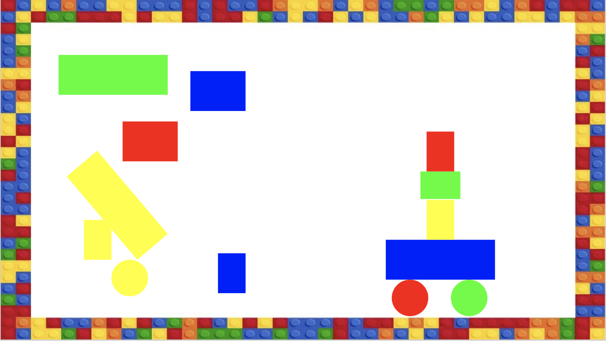

Lesson 1 - Algorithms and Pseudocode
At the end of this lesson, you will be able to:
- Describe what an algorithm is and develop one to solve a problem.
- Test an algorithm with different input data.
- Use pseudocode to plan a program before writing any code.
What is an algorithm?
Before we write a single line of Python, we need to talk about the thing that actually matters: figuring out the steps. An algorithm is just a step-by-step method for completing a task. A recipe is an algorithm. The directions to your friend's apartment are an algorithm. The little routine you do every morning to get out the door is an algorithm.
A program is an algorithm written down in a language a computer understands. Remember from earlier units that a computer really only does four things: it takes in input, stores information, processes it, and produces output. Every program you write is just an algorithm built out of those four moves.
The catch: computers do exactly what you say
Here's the part that makes programming hard (and a little funny): a computer has no common sense. It does precisely what you tell it, in precisely the order you tell it - no more, no less. If you leave out a step, it doesn't fill in the gap the way a person would. It just... doesn't do that step.

 Complete on your own!
Complete on your own!
Open Unit 3 Lesson 1 - Legos for a fun activity. You'll write an "algorithm" - a set of build instructions - for a small Lego structure, and a classmate will follow your steps exactly as written to try to recreate it. (Starter slides: make your own copy here.) You will be amazed how a step that's "obvious" to you turns into chaos when someone follows it literally. That gap - between what you meant and what you actually said - is the whole challenge of programming.
Planning with pseudocode
Because precision matters so much, experienced programmers almost never start by typing real code. They start by writing pseudocode: the logic of the program in plain English, before worrying about the exact rules of any particular language. It's the rough draft. The outline before the essay. The recipe card before you turn on the stove.
Pseudocode isn't a real language - you can't run it - and there's no single "correct" way to write it. The point is just to think the problem through in steps. Here are a few examples:
Add two numbers
Input two numbers, A, B
Compute sum = A + B
Print sum
Area of a rectangle
Input the length
Input the width
Compute area = length * width
Display area
Important! Don't skip this step when you write programs. Read the problem and think about how you'd explain the solution to another person, step by step, before you touch the keyboard. It feels slower, but it's how you avoid getting lost halfway through. Like writing out a recipe before you start cooking!
A sneak peek: bundling steps into a new instruction. Notice how "make coffee" stands in for a dozen little steps - grind, boil, pour, wait - yet you just say "make coffee" and everyone knows what you mean. Algorithms let you do the same trick: once a group of steps naturally goes together, you can wrap them up, give the bundle a name, and from then on just say the name instead of listing every step again. It's like inventing a brand-new instruction - a new verb for the computer. Programmers call these bundles functions, and they're one of the most powerful ideas in all of coding: they let you collapse a pile of steps into a single named thing you can reuse anywhere. We'll build our own in Lesson 5 - for now, just notice the move.
Testing your algorithm
An algorithm isn't finished just because it runs - it has to give the right answer for every situation. Suppose we want an algorithm that prints the smaller of two numbers:
if x is smaller than y
print x
else
print y
To be confident this works, we test it with input data that covers every case we can think of:
x = 2, y = 4(the first number is smaller)x = 4, y = 2(the second number is smaller)x = 2, y = 2(they're equal - does it still do something sensible?)
Choosing good test data - especially the weird edge cases, like the two numbers being equal - is a skill we'll come back to again and again. A program that works on the obvious case but breaks on the edge case is a program with a bug waiting to happen.
Coming up next: In the next lesson we finally start writing real Python - your first program, how to store data in variables, and the different kinds of data Python can hold.